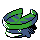

#375
Lotad
WaterGrass
Abilities: Swift Swim, Rain Dish, Own Tempo
Base stats BST 220
HP40
Attack30
Defense30
Speed30
Sp. Atk40
Sp. Def50
Evolution
dbbw EVOLVE_LEVEL, 14, LOMBRELevel-up learnset
LevelMoveType
Lv. 1GrowlNormal
Lv. 1AstonishGhost
Lv. 1AbsorbGrass
Lv. 6Water GunWater
Lv. 9BubbleWater
Lv. 13Mega DrainGrass
Lv. 16FlailNormal
Lv. 19BubblebeamWater
Lv. 22Giga DrainGrass
Lv. 24Leech SeedGrass
Lv. 25Rain DanceWater
Lv. 28MistIce
Lv. 31Zen HeadbuttPsychic
Lv. 34Energy BallGrass